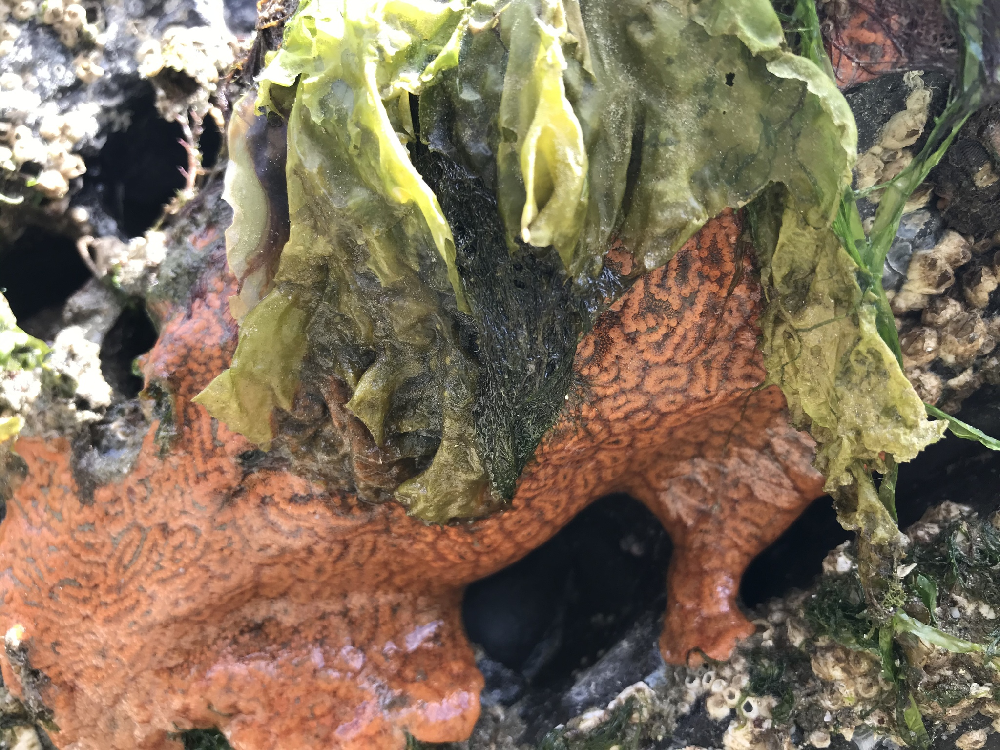

The name ‘Tunicata’ comes from the Latin tunicatus, past particle of the verb tunicare, “to clothe with a tunic.”
Tunicates are filter-feeding marine animals that derive their name from their protective exoskeleton, called the tunic, which is formed of proteins and carbohydrates. A subphylum of Chordata, Tunicata are traditionally divided into three classes—Ascidiacea, Thaliacea and Appendicularia—though recent evidence suggests this group is paraphyletic. Ascidiacea, or ascidians, are the most diverse and common class of tunicates and are, indeed, the only class represented in this dataset. There are around 2,815 described ascidian species worldwide. Four of the 71 taxa reported from the coast of British Columbia are extremely deep-water species, while five are restricted to northern BC and are, thus, not expected for Galiano Island. Of the 62 species that might be expected to occur locally, 32 species have been documented to date.
 Ascidians are sessile organisms found at all ocean depths worldwide, attaching to natural surfaces such as rocky outcrops and invertebrate shells, as well as artificial structures such as pilings, docks and boat hulls. Notable reports for Galiano Island include several non-native species that have a long history of invasion, often resulting in measurable impacts in other parts of Canada and around the world. Native to Japan, the lined compound ascidian (Botrylloides violaceus) was first introduced to the Pacific coast in California in 1973 and spread northwards along the coast to Canada. The carpet sea squirt (Didemnum vexillum) is also thought to be native to Japan and was first reported for British Columbian waters in 2003. Other reported taxa, such as the sea vase (Ciona savignyi) and grey encrusting compound tunicate (Diplosoma listerianum) have unknown provenance and may, thus, be described as cryptogenic.
Since the Biodiversity Galiano project began in 2016, our community has documented 13 tunicate species in the waters around Galiano Island, confirming 39 percent of the historical records and adding no new species to the list. Of the 31 historically reported taxa, 19 species remain unconfirmed, having gone unreported in the last twenty years.
Tunicates are generally under-represented in this study as they are easily overlooked; new species are still being discovered in British Columbia. The Thaliacea and Appendicularia, in particular, are poorly represented—the former limited to a singular dive observation that has not been identified beyond the level of class and the latter not represented at all. Unlike ascidians, these groups include exclusively pelagic species that are more abundant in warmer waters, with low probability of being detected in surveys around Galiano Island.
Please help contribute to the growing record of the island tunicate diversity by submitting your observations to the Biodiversity Galiano iNaturalist project. Here, you can browse photos of tunicates commonly documented around Galiano Island, as well as recent observations, most favourited observations, and top observers, based on iNaturalist data.